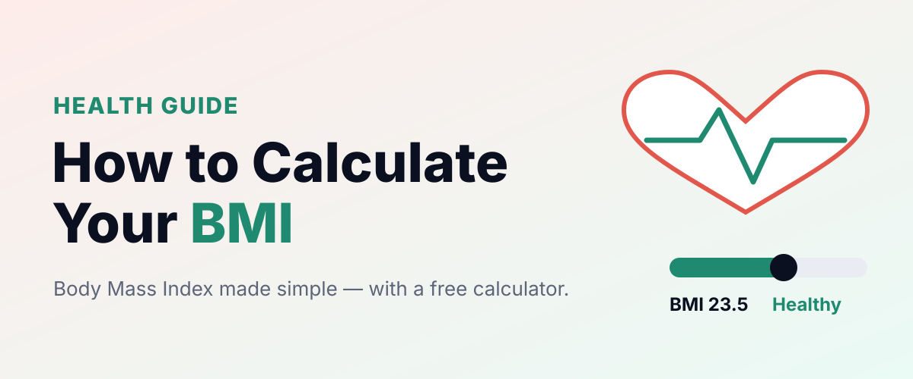

← Blog · Health
Health
How to calculate your BMI (and what it really means)

The most common health number in the world.
The formula
BMI = weight (kg) ÷ height (m)²
175 cm and 72 kg = 23.5.
| BMI | Category |
|---|---|
| <18.5 | Underweight |
| 18.5–24.9 | Healthy |
| 25–29.9 | Overweight |
| 30+ | Obese |
Ad space
Why it isn’t everything
BMI doesn’t tell muscle from fat.
⚠ Remember: these are educational estimates, not professional advice. See our disclaimer.